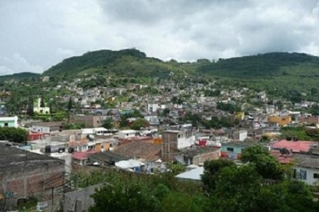
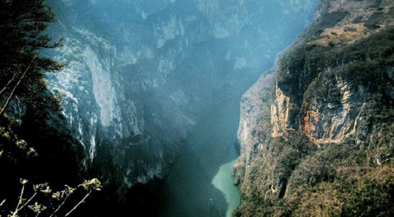

San Fernando es un municipio en el norte del estado de Chiapas, México. Se encuentra a 20 Km. de Tuxtla Gutiérrez. Antiguamente, los zoques lo nombraron Shahuipac, es decir “Barranco del mono”; después, los nahoas la llamaron Osumapa “Lugar del mono”. Posee una extensión territorial de 258.30 km² .
San Fernando colinda al Norte con Copainalá, al Noreste con Chicoasén, al Este con Osumacinta, al Sur con Tuxtla Gutiérrez y al Oeste con Berriozábal. Tiene un clima sub-húmedo con lluvias en verano, la vegetación está compuesta por selva mediana y bosque de encino-pino. El río más importante es el Mezcalapa o Grijalva, así como los ríos el Barrancón, Blanco, Cuachin, El Celin y los arroyos El Shuti, Zacatorial y Jacorió. El municipio ocupa parte de la Zona Protectora Forestal Vedada "Villa Allende" y El Parque Nacional "Cañón del Sumidero". El municipio se ubica en la región económica "I Centro", limita al norte con Copainalá, al este con Chicoasén y Osumacinta, al sur con Tuxtla Gutiérrez y al oeste con Berriozábal. Las coordenadas de la cabecera municipal son: 16° 52' 15 de latitud norte y 93° 12' 25 de longitud oeste y se ubica a una altitud de 880 metros sobre el nivel del mar.

El pueblo antiguo fue fundado por los zoques, quienes lo nombraron Shahuipac, es decir "Barranco del mono"; de Shahui, mono; y Pac, barranco. Cuando los nahoas dominaron estas tierras, la llamaron Osumapa "Lugar del mono"; de Osumatli, mono; Apan, lugar.
(A)C(fm) semicálido húmedo con lluvias todo el año, que abarca el 87.63%; C(fm)C, templado húmedo con lluvias todo el año el 8.04%;C(m)(w) templado húmedo con lluvias en verano, el 3.89 % y A(mf) cálido.
La vegetación presente en el municipio es la siguiente: vegetación secundaria (selva baja caducifolia y subcaducifolia con vegetación secundaria arbustiva y herbácea) que abarca el 46.99%; selvas húmedas y subhúmedas (selva alta y mediana subperennifolia) el 11.87%; bosque de coníferas (bosque de pino - encino) el 5.15%; selvas secas (selva baja caducifolia y subcaducifolia) el 5.07%; bosques caducifolios (bosque de encino) el 3.99% y pastizales y herbazales (pastizal inducido) que ocupa el 2.11 % de la superficie municipal. El municipio cuenta con 22,093.72 has. de áreas naturales protegidas, que representa el 61.35% de la superficie municipal y el 1.71% del territorio estatal.